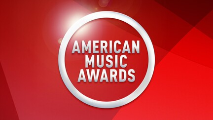
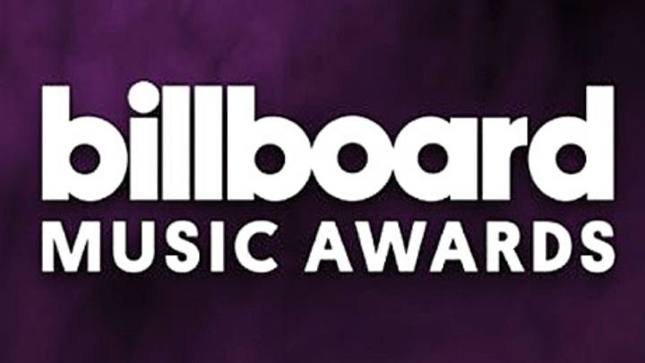
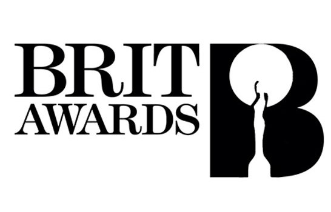
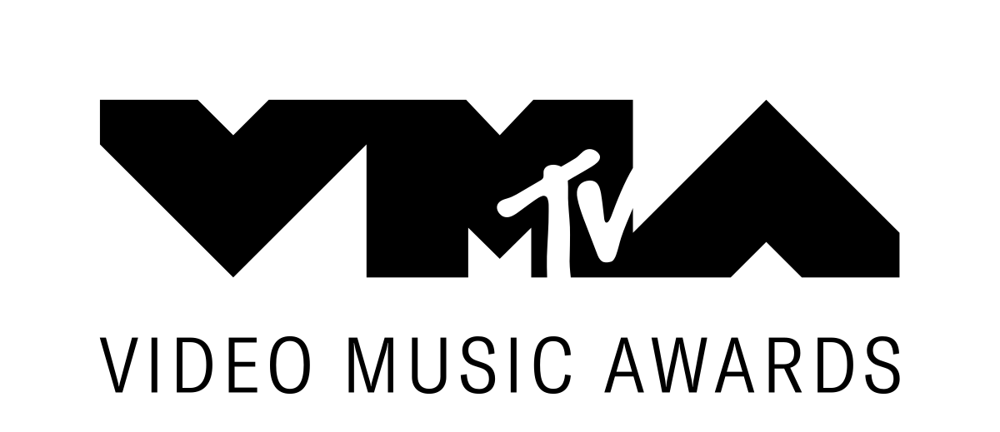
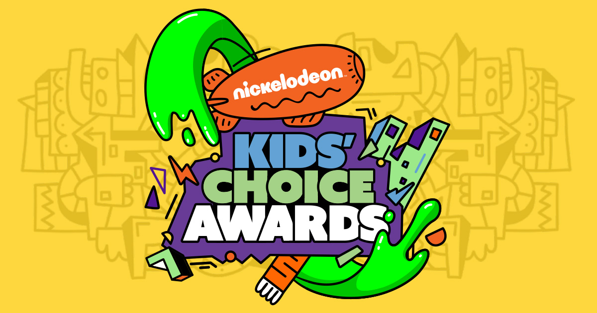
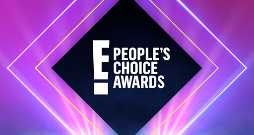
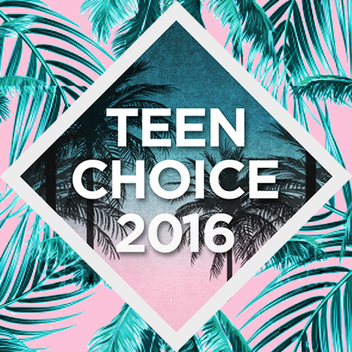

One Direction has won 242 awards and has been nominated for 366 awards.
American Music Awards |
|
Billboard Music Awards |
|
Brit Awards |
|
MTV Video Music Awards |
2012: Best New Artist |
Nickelodeon Kids' Choice Awards |
2013: Favorite Music Group |
People's Choice Awards |
2013: "Up All Night" Favorite Album |
Teen Choice Awards |
2012: Breakout Group/Love Song/Music Star - Group |